| Ninth house |
Leigh Bardugo |
Alex Stern #1 |
Dark Academia |
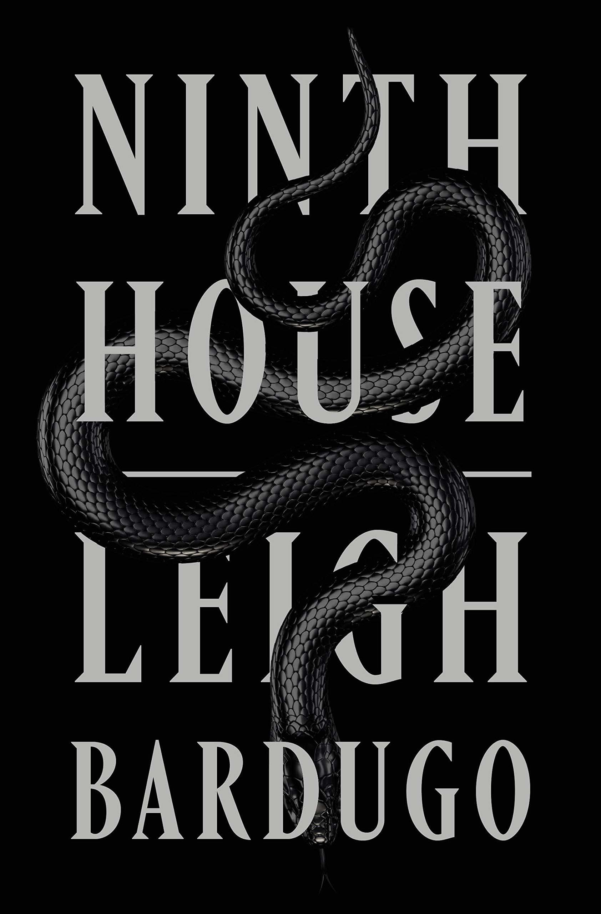 |
Galaxy “Alex” Stern is the most unlikely member of Yale's freshman class.
Raised in the Los Angeles hinterlands by a hippie mom, Alex dropped out of school early and into a world of shady drug dealer boyfriends, dead-end jobs, and much, much worse.
By age twenty, in fact, she is the sole survivor of a horrific, unsolved multiple homicide. Some might say she's thrown her life away.
But at her hospital bed, Alex is offered a second chance: to attend one of the world's most elite universities on a full ride. What's the catch, and why her?
Still searching for answers to this herself, Alex arrives in New Haven tasked by her mysterious benefactors with monitoring the activities of Yale's secret societies.
These eight windowless “tombs” are well-known to be haunts of the future rich and powerful, from high-ranking politicos to Wall Street and Hollywood's biggest players.
But their occult activities are revealed to be more sinister and more extraordinary than any paranoid imagination might conceive. |
| Vengeful |
V.E. Schwab |
Villans #2 |
Urban Fantasy |
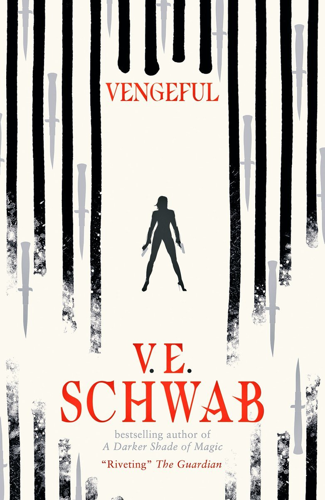 |
Pas op! Spoilers voor vorige boek(en) Magneto and Professor X. Superman and Lex Luthor. Victor Vale and Eli Ever. Sydney and Serena Clarke. Great partnerships, now soured on the vine.
But Marcella Riggins needs no one. Flush from her brush with death, she's finally gained the control she's always sought—and will use her new-found power to bring the city of Merit to its knees.
She'll do whatever it takes, collecting her own sidekicks, and leveraging the two most infamous EOs, Victor Vale and Eli Ever, against each other.
With Marcella's rise, new enmities create opportunity--and the stage of Merit City will once again be set for a final, terrible reckoning. |
| Twin Crowns |
Catherine Doyle & Katherine Webber |
Twin Crowns #1 |
YA Fantasy |
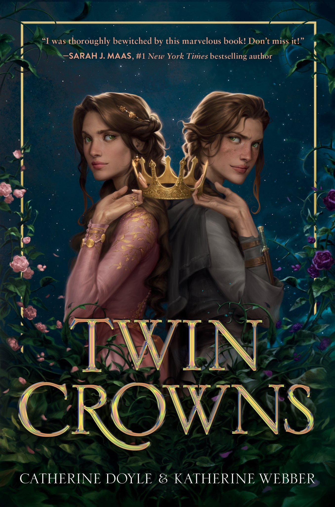 |
Wren Greenrock has always known that one day she would steal her sister's place in the palace.
Trained from birth to return to the place of her parents' murder and usurp the only survivor, she will do anything to rise to power and protect the community of witches she loves.
Or she would, if only a certain palace guard wasn't quite so distractingly attractive, and if her reckless magic didn't have a habit of causing trouble...
Princess Rose Valhart knows that with power comes responsibility.
Marriage into a brutal kingdom awaits, and she will not let a small matter like waking up in the middle of the desert in the company of an extremely impertinent (and handsome) kidnapper get in the way of her royal duty.
But life outside the palace walls is wilder and more beautiful than she ever imagined, and the witches she has long feared might turn out to be the family she never knew she was missing.
Two sisters separated at birth and raised into entirely different worlds are about to get to know each other's lives a whole lot better.
But as coronation day looms closer and they each strive to claim their birthright, the sinister Kingsbreath, Willem Rathborne, becomes increasingly determined that neither will succeed.
Who will ultimately rise to power and wear the crown? |
| Cursed Crowns |
Catherine Doyle & Katherine Webber |
Twin Crowns #2 |
YA Fantasy |
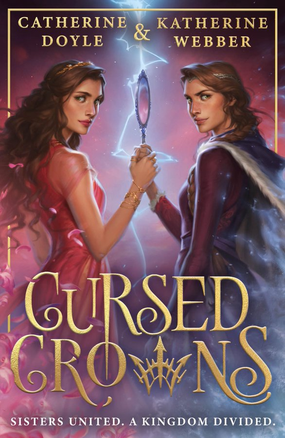 |
Pas op! Spoilers voor vorige boek(en)Twin queens Wren and Rose have claimed their crowns . . . but not everyone is happy about witches sitting on Eana's throne.
Cool-headed Rose sets off on a Royal Tour to win over the doubters, but soon finds herself drawn to the Sunless Kingdom.
Here secrets are revealed about those closest to her, and Rose finds her loyalties divided.
Meanwhile rebellious Wren steals away to the icy north to rescue their beloved grandmother, Banba.
But when she accepts King Alarik's deadly magical bargain in exchange for Banba's freedom, the spell has unexpected - and far-reaching - consequences . . .
As an ancient curse begins to arise from the darkness, the sisters must come together and unite the crown. Their lives - and the future of Eana - depend on it.
Break the ice to free the curse, Kill one twin to save another . . . |
| Glint |
Raven Kennedy |
The Plated Prisoner #2 |
FantasyRomance |
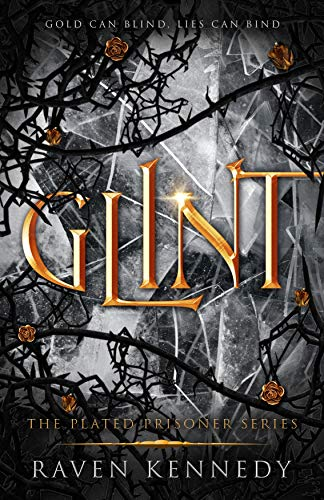 |
Pas op! Spoilers voor vorige boek(en)For ten years, I've lived in a gilded cage inside King Midas's golden castle. But one night changed everything.
Now I'm here, a prisoner of Fourth Kingdom's army, and I'm not sure if I'm going to make it out of this in one piece.
They're marching to battle, and I'm the bargaining chip that will either douse the fire or spark a war.
At the heart of my fear, my worry, there's him—Commander Rip.
Known for his brutality on the battlefield, his viciousness is unsurpassed. But I know the truth about what he is.
Fae.
The betrayers. The murderers. The ones who nearly destroyed Orea, wiping out Seventh Kingdom in the process.
Rip has power sizzling beneath this skin and glinting spikes down his spine. But his eyes—his eyes are the most compelling of all.
When he turns those black eyes on me, I feel captive for an entirely different reason.
I may be out of my cage, but I'm not free, not even close. In the game of kings and armies, I'm the gilded pawn. The question is, can I out maneuver them? |
| Gleam |
Raven Kennedy |
The Plated Prisoner #3 |
FantasyRomance |
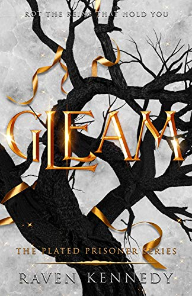 |
Pas op! Spoilers voor vorige boek(en)King Midas made me the woman I am today. Notorious. Unattainable. His.
The thing about being confined is that you believe it's to keep the bad out... Until you realize it's about keeping you in.
I'm now in a strange kingdom surrounded by liars, with no allies of my own, but I won't sit idly by and let myself wither.
No, there's something that's bloomed from the pit of my repression. Something dark. Something angry.
But the last thing I expected was for my anger to call out to him. King Ravinger.
He's sinister and powerful and entirely too seductive. I've learned my lesson with trusting manipulative kings, so why does my chest constrict every time he's near?
I need to tread carefully, or I'm at risk of losing much more than just my freedom.
Regret and revenge war inside of me, and I need to figure out a plan fast before I get tangled up in the schemes of kings and queens.
Because I won't be caught in a cage again. No, this time, It'll be me setting the trap... I just hope my heart comes out of this unscathed. |
| Glow |
Raven Kennedy |
The Plated Prisoner #4 |
FantasyRomance |
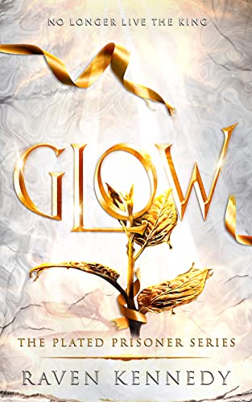 |
Pas op! Spoilers voor vorige boek(en)"I was nothing but a road to Midas. A means to get to where he wanted to go, and I paved that path in gold."
My life has been made up of gilded lies. But death has been shaped from rot.
Like a phoenix caught fire, I will need to rise from the ashes and learn to wield my own power.
Because my wings may have been clipped, but I am not in a cage, and I'm finally free to fly from the frozen kingdoms I've been kept in.
Yet the world doesn't want to let me.
That's the thing when you turn against a king—everyone else turns against you.
Good thing I have a different king in my corner.
But even with the dark threat of Slade Ravinger, the other monarchs are coming for me.
So I will fight for him and he will kill for me, and if we need to become the villains, then so be it.
Because so long as I live in this world, I won't be used again. |
| One of us is next |
Karen M. McManus |
One of us is lying #2 |
YA Mystery |
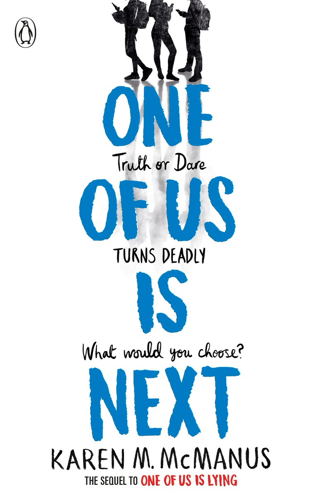 |
Pas op! Spoilers voor vorige boek(en)It is a year after the action of One of Us Is Lying, and someone has started playing a game of Truth or Dare.
But this is no ordinary Truth or Dare. This game is lethal.
Choosing the truth may reveal your darkest secrets, accepting the dare could be dangerous, even deadly.
The teenagers of Bayview must work together once again to find the culprit, before it's too late . . . |
| Phoenix Flame |
Sara Holland |
Havenfall #2 |
Urban Fantasy |
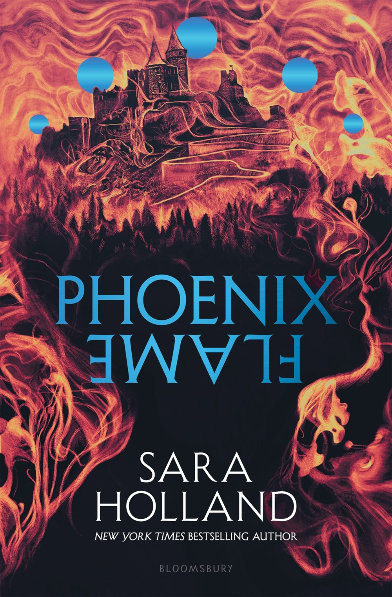 |
Pas op! Spoilers voor vorige boek(en)Maddie thought her problems were over. She saved the Inn at Havenfall—a sanctuary between magical worlds—from the evil Silver Prince.
Her uncle the Innkeeper is recovering from a mysterious spell that left him not quite human.
And there are still a few weeks of summer left to spend with her more-than-friend Brekken.
But there's more work to be done to protect the Inn—Maddie must put an end to the black-market trading of magical objects and open the Inn's doors to the once feared land of shapeshifters.
As she tries to accomplish both seemingly impossible tasks, Maddie uncovers secrets that could change everything.
What if saving everyone means destroying the only home she's known? |
| A Vow so Bold and Deadly |
Brigid Kemmerer |
Cursebreakers #3 |
YA Fantasy |
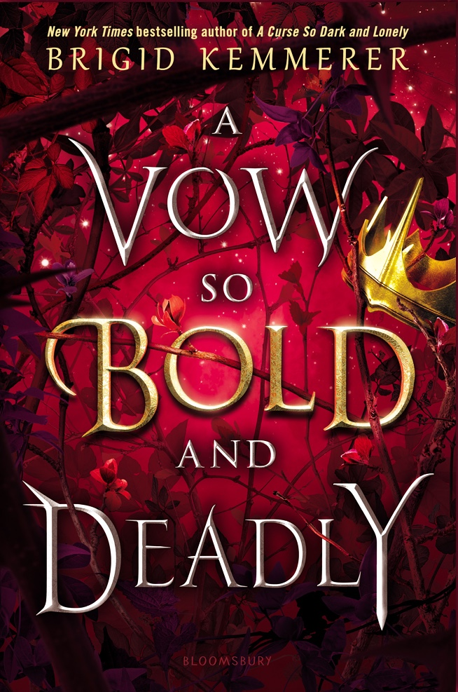 |
Pas op! Spoilers voor vorige boek(en)Emberfall is crumbling fast, torn between those who believe Rhen is the rightful prince and those who are eager to begin a new era under Grey, the true heir.
Grey has agreed to wait two months before attacking Emberfall, and in that time, Rhen has turned away from everyone—even Harper, as she desperately tries to help him find a path to peace.
Meanwhile, Lia Mara struggles to rule Syhl Shallow with a gentler hand than her mother.
But after enjoying decades of peace once magic was driven out of their lands, some of her subjects are angry Lia Mara has an enchanted prince and a magical scraver by her side.
As Grey's deadline draws nearer, Lia Mara questions if she can be the queen her country needs. |
| The Dance Tree |
Kiran Millwood Hargrave |
- |
Historical Fiction |
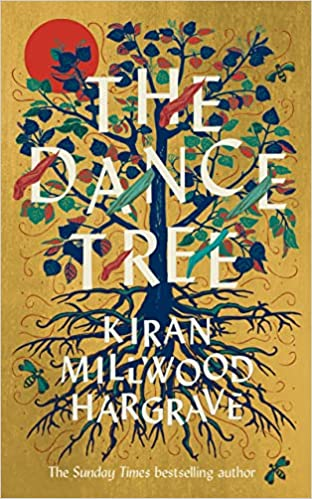 |
Strasbourg, 1518. In the midst of a blisteringly hot summer, a lone woman begins to dance in the city square.
She dances for days without pause or rest, and when hundreds of other women join her, the men running the city declare a state of emergency and hire musicians to play the Devil out of the mob.
Outside the city, pregnant Lisbet lives with her husband and mother-in-law, tending the bees that are the family's livelihood.
Though Lisbet is removed from the frenzy of the dancing plague afflicting the city's women, her own quiet life is upended by the arrival of her sister-in-law.
Nethe has been away for seven years, serving a penance in the mountains for a crime no one will name.
It is a secret Lisbet is determined to uncover. As the city buckles under the beat of a thousand feet, Lisbet becomes caught in a dangerous web of deceit and clandestine passion.
Like the women of Strasbourg, she too, is dancing to a dangerous tune. . . .
Set in an era of superstition, hysteria, and extraordinary change, and inspired by true events,
The Dance Tree is an impassioned story of family secrets, forbidden love, and women pushed to the edge. |
| Elizabeth of York: The Last White Rose |
Alison Weir |
Tudor Rose #1 |
Historical Fiction |
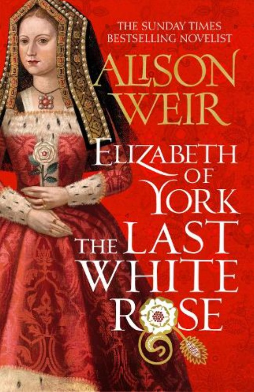 |
Mother. Trailblazer. Queen. The spellbinding story of Elizabeth of York, the first Tudor queen. |
| The Little Book of Witchcraft |
Kitty Guilsborough |
- |
Non-Fiction |
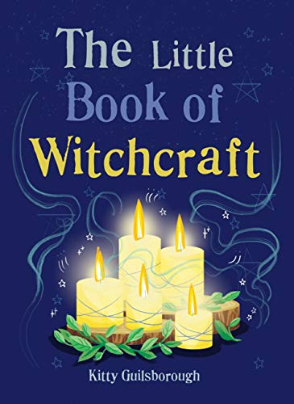 |
Discover the history of witches, experience the healing properties of crystals and learn simple daily incantation that will help you to shape your destiny.
Witchcraft has existed since the days of Greek mythology and is now practiced as widely as other modern pagan religions.
More than spells and incantations, witchcraft is a lifestyle that can help you relax, heal, and grow in confidence.
With this guide, you'll learn the basics from assembling your own witch kit and getting to grips with tarot, to growing your own 'Witch Kitchen Garden'.
Whether you want to learn more about rituals and magic, or if you just want to get in touch with your witchy side, The Little Book of Witchcraft will show you the way.
In this book, magic writer Kitty Guilsborough shows you how to harness your inner power by unlocking the ancient art of witchcraft. |
| A Clash of Kings |
George R.R. Martin |
A Song of Ice and Fire #2 |
High Fantasy |
 |
Pas op! Spoilers voor vorige boek(en)A comet the color of blood and flame cuts across the sky.
Two great leaders—Lord Eddard Stark and Robert Baratheon—who hold sway over an age of enforced peace are dead, victims of royal treachery.
Now, from the ancient citadel of Dragonstone to the forbidding shores of Winterfell, chaos reigns.
Six factions struggle for control of a divided land and the Iron Throne of the Seven Kingdoms, preparing to stake their claims through tempest, turmoil, and war.
It is a tale in which brother plots against brother and the dead rise to walk in the night.
Here a princess masquerades as an orphan boy; a knight of the mind prepares a poison for a treacherous sorceress; and wild men descend from the Mountains of the Moon to ravage the countryside.
Against a backdrop of incest and fratricide, alchemy and murder, victory may go to the men and women possessed of the coldest steel...and the coldest hearts.
For when kings clash, the whole land trembles. |
| A Storm of Swords |
George R.R. Martin |
A Song for Ice and Fire #3 |
High Fantasy |
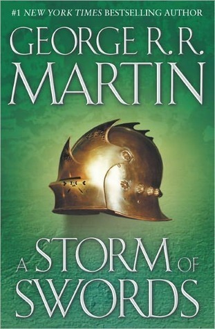 |
Pas op! Spoilers voor vorige boek(en)Of the five contenders for power, one is dead, another in disfavor, and still the wars rage as violently as ever, as alliances are made and broken.
Joffrey, of House Lannister, sits on the Iron Throne, the uneasy ruler of the land of the Seven Kingdoms.
His most bitter rival, Lord Stannis, stands defeated and disgraced, the victim of the jealous sorceress who holds him in her evil thrall.
But young Robb, of House Stark, still rules the North from the fortress of Riverrun.
Robb plots against his despised Lannister enemies, even as they hold his sister hostage at King’s Landing, the seat of the Iron Throne.
Meanwhile, making her way across a blood-drenched continent is the exiled queen, Daenerys, mistress of the only three dragons still left in the world. . . .
But as opposing forces maneuver for the final titanic showdown, an army of barbaric wildlings arrives from the outermost line of civilization.
In their vanguard is a horde of mythical Others--a supernatural army of the living dead whose animated corpses are unstoppable.
As the future of the land hangs in the balance, no one will rest until the Seven Kingdoms have exploded in a veritable storm of swords. . . . |
| A Feast for Crows |
George R.R. Martin |
A Song for Ice and Fire #4 |
High Fantasy |
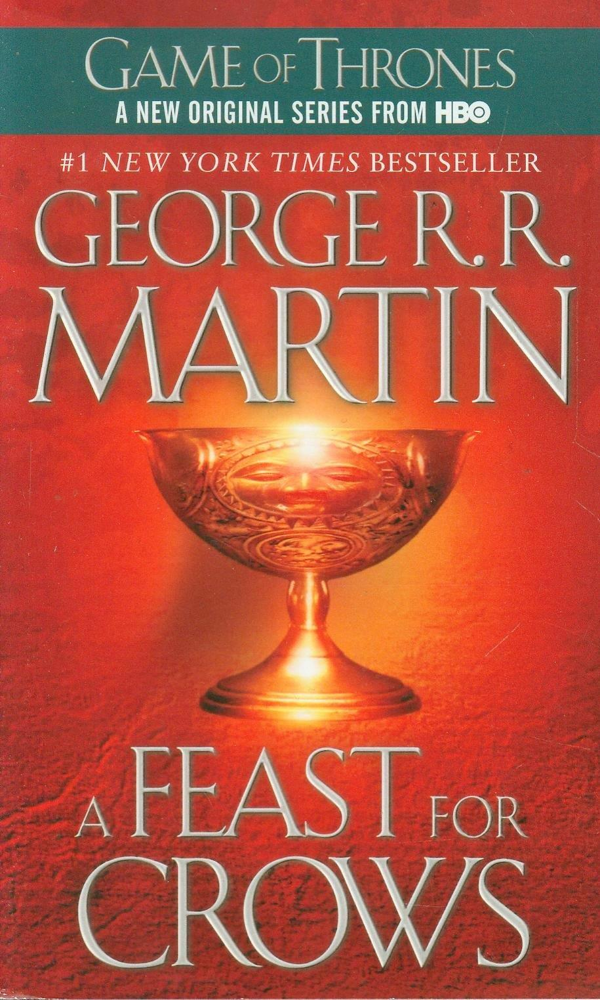 |
Pas op! Spoilers voor vorige boek(en)Bloodthirsty, treacherous and cunning, the Lannisters are in power on the Iron Throne in the name of the boy-king Tommen.
The war in the Seven Kingdoms has burned itself out, but in its bitter aftermath new conflicts spark to life.
The Martells of Dorne and the Starks of Winterfell seek vengeance for their dead.
Euron Crow's Eye, as black a pirate as ever raised a sail, returns from the smoking ruins of Valyria to claim the Iron Isles.
From the icy north, where Others threaten the Wall, apprentice Maester Samwell Tarly brings a mysterious babe in arms to the Citadel.
Against a backdrop of incest and fratricide, alchemy and murder, victory will go to the men and women possessed of the coldest steel and the coldest hearts. |
| A Dance with Dragons |
George R.R. Martin |
A Song for Ice and Fire #5 |
High Fantasy |
 |
Pas op! Spoilers voor vorige boek(en)In the aftermath of a colossal battle, the future of the Seven Kingdoms hangs in the balance—beset by newly emerging threats from every direction.
In the east, Daenerys Targaryen, the last scion of House Targaryen, rules with her three dragons as queen of a city built on dust and death.
But Daenerys has thousands of enemies, and many have set out to find her.
As they gather, one young man embarks upon his own quest for the queen, with an entirely different goal in mind.
Fleeing from Westeros with a price on his head, Tyrion Lannister, too, is making his way to Daenerys.
But his newest allies in this quest are not the rag-tag band they seem, and at their heart lies one who could undo Daenerys's claim to Westeros forever.
Meanwhile, to the north lies the mammoth Wall of ice and stone—a structure only as strong as those guarding it.
There, Jon Snow, 998th Lord Commander of the Night's Watch, will face his greatest challenge.
For he has powerful foes not only within the Watch but also beyond, in the land of the creatures of ice.
From all corners, bitter conflicts reignite, intimate betrayals are perpetrated, and a grand cast of outlaws and priests, soldiers and skinchangers, nobles and slaves, will face seemingly insurmountable obstacles.
Some will fail, others will grow in the strength of darkness. But in a time of rising restlessness, the tides of destiny and politics will lead inevitably to the greatest dance of all. |
| The Great Hunt |
Robert Jordan |
The Wheel of Time #2 |
High Fantasy |
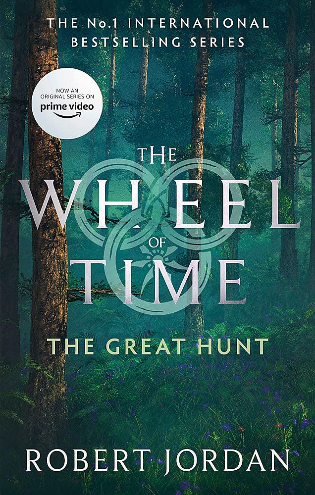 |
Pas op! Spoilers voor vorige boek(en)The Forsaken are loose, the Horn of Valere has been found and the Dead are rising from their dreamless sleep.
The Prophecies are being fulfilled - but Rand al'Thor, the shepherd the Aes Sedai have proclaimed as the Dragon Reborn, desperately seeks to escape his destiny.
Rand cannot run for ever. With every passing day the Dark One grows in strength and strives to shatter his ancient prison, to break the Wheel, to bring an end to Time and sunder the weave of the Pattern.
And the Pattern demands the Dragon. |
| The Hero of Ages |
Brandon Sanderson |
The Mistborn Saga #3 |
High Fantasy |
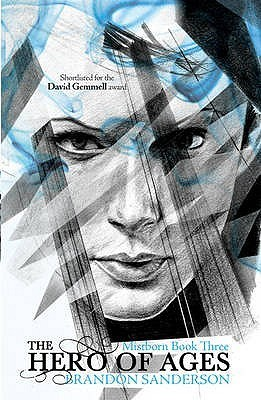 |
Pas op! Spoilers voor vorige boek(en)To end the Final Empire and restore freedom, Vin killed the Lord Ruler.
But as a result, the Deepness—the lethal form of the ubiquitous mists—is back, along with increasingly heavy ashfalls and ever more powerful earthquakes.
Humanity appears to be doomed.
Having escaped death at the climax of The Well of Ascension only by becoming a Mistborn himself, Emperor Elend Venture hopes to find clues left behind by the Lord Ruler that will allow him to save the world.
Vin is consumed with guilt at having been tricked into releasing the mystic force known as Ruin from the Well.
Ruin wants to end the world, and its near omniscience and ability to warp reality make stopping it seem impossible.
Vin can't even discuss it with Elend lest Ruin learn their plans! |
| The Alloy of Law |
Brandon Sanderson |
The Mistborn Saga #4 |
High Fantasy |
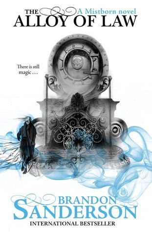 |
Pas op! Spoilers voor vorige boek(en)Three hundred years after the events of the Mistborn trilogy, Scadrial is now on the verge of modernity, with railroads to supplement the canals,
electric lighting in the streets and the homes of the wealthy, and the first steel-framed skyscrapers racing for the clouds.
Kelsier, Vin, Elend, Sazed, Spook, and the rest are now part of history—or religion.
Yet even as science and technology are reaching new heights, the old magics of Allomancy and Feruchemy continue to play a role in this reborn world.
Out in the frontier lands known as the Roughs, they are crucial tools for the brave men and women attempting to establish order and justice.
One such is Waxillium Ladrian, a rare Twinborn who can Push on metals with his Allomancy and use Feruchemy to become lighter or heavier at will.
After twenty years in the Roughs, Wax has been forced by family tragedy to return to the metropolis of Elendel.
Now he must reluctantly put away his guns and assume the duties and dignity incumbent upon the head of a noble house.
Or so he thinks, until he learns the hard way that the mansions and elegant tree-lined streets of the city can be even more dangerous than the dusty plains of the Roughs. |
| Defy the Night |
Brigid Kemmerer |
Defy the Night #1 |
YA Fantasy |
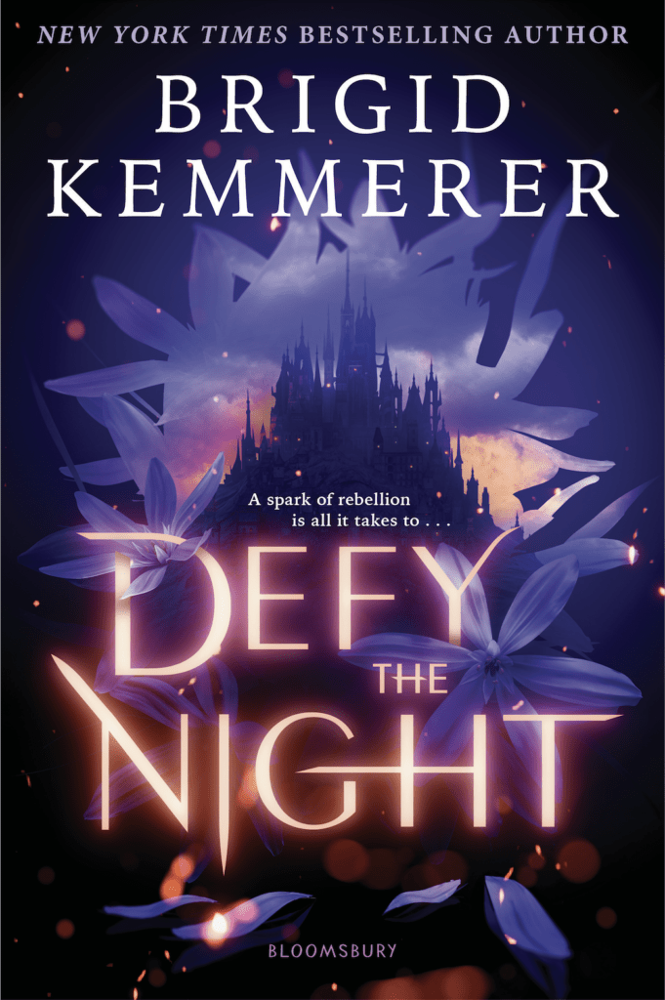 |
The kingdom of Kandala is on the brink of disaster.
Rifts between sectors have only worsened since a sickness began ravaging the land, and within the Royal Palace, the king holds a tenuous peace with a ruthless hand.
King Harristan was thrust into power after his parents' shocking assassination, leaving the younger Prince Corrick to take on the brutal role of the King's Justice.
The brothers have learned to react mercilessly to any sign of rebellion--it's the only way to maintain order when the sickness can strike anywhere, and the only known cure, an elixir made from delicate Moonflower petals, is severely limited.
Out in the Wilds, apothecary apprentice Tessa Cade is tired of seeing her neighbors die, their suffering ignored by the unyielding royals.
Every night, she and her best friend Wes risk their lives to steal Moonflower petals and distribute the elixir to those who need it most--but it's still not enough.
As rumors spread that the cure no longer works and sparks of rebellion begin to flare, a particularly cruel act from the King's Justice makes Tessa desperate enough to try the impossible: sneaking into the palace.
But what she finds upon her arrival makes her wonder if it's even possible to fix Kandala without destroying it first. |
| Defend the dawn |
Brigid Kemmerer |
Defy the Night #2 |
YA Fantasy |
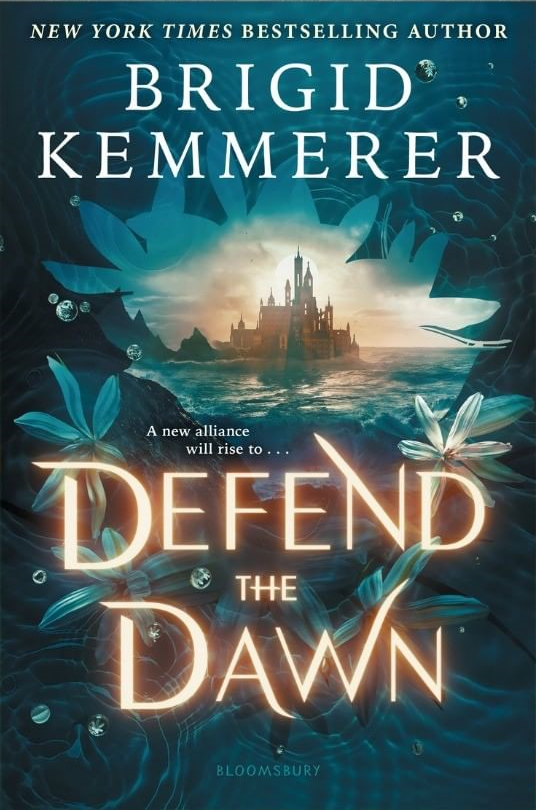 |
Pas op! Spoilers voor vorige boek(en)To save their kingdom, they must embark on a dangerous journey...
The kingdom of Kandala narrowly avoided catastrophe, but the embers of revolution still simmer.
While King Harristan seeks a new way to lead, Tessa and Prince Corrick attempt to foster unity between rebels and royals.
But the consuls who control the Moonflower will not back down, and Corrick realizes he must find a new source for the lifesaving Elixir.
When an emissary from the neighboring kingdom of Ostriary arrives with an intriguing offer, Tessa and Corrick set out on an uncertain journey as they attempt to mend their own fractured relationship.
This could be their only chance to keep the peace and bring relief to the people of Kandala, but danger strikes during the journey to Ostriary, and no one is who they seemed to be... |
| Bone Crier's Moon |
Kathryn Purdie |
Bone Grace #1 |
YA Fantasy |
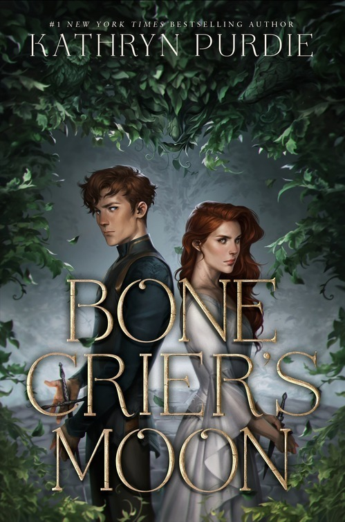 |
Bone Criers' have a sacred duty. They alone can keep the dead from preying on the living.
But their power to ferry the spirits of the dead into goddess Elara's Night Heavens or Tyrus's Underworld comes from sacrifice.
The gods demand a promise of dedication. And that promise comes at the cost of the Bone Crier's one true love.
Ailesse has been prepared since birth to become the matriarch of the Bone Criers, a mysterious famille of women who use strengths drawn from animal bones to ferry dead souls.
But first she must complete her rite of passage and kill the boy she's also destined to love.
Bastien's father was slain by a Bone Crier and he's been seeking revenge ever since. Yet when he finally captures one, his vengeance will have to wait.
Ailesse's ritual has begun and now their fates are entwined—in life and in death.
Sabine has never had the stomach for the Bone Criers' work.
But when her best friend Ailesse is taken captive, Sabine will do whatever it takes to save her, even if it means defying their traditions—and their matriarch—to break the bond between Ailesse and Bastien.
Before they all die. |
| Year of the Reaper |
Makiia Lucier |
- |
YA Fantasy |
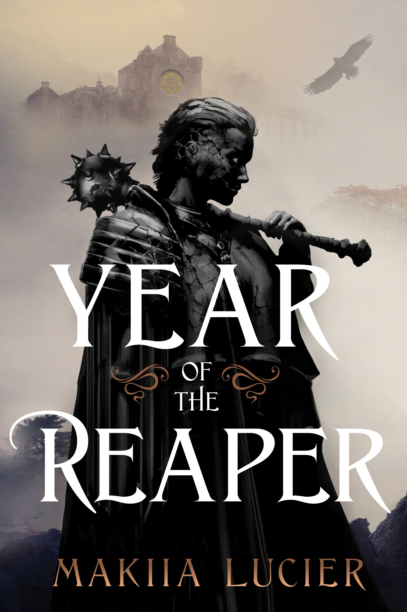 |
Before an ambush by enemy soldiers, Lord Cassia was an engineer's apprentice on a mission entrusted by the king.
But when plague sweeps over the land, leaving countless dead and devastating the kingdom, even Cas' title cannot save him from a rotting prison cell and a merciless sickness.
Three years later, Cas wants only to return to his home in the mountains and forget past horrors. But home is not what he remembers.
His castle has become a refuge for the royal court. And they have brought their enemies with them.
When an assassin targets those closest to the queen, Cas is drawn into a search for a killer… one that leads him to form an unexpected bond with a brilliant young historian named Lena.
Cas and Lena soon realize that who is behind the attacks is far less important than why.
They must look to the past, following the trail of a terrible secret—one that could threaten the kingdom's newfound peace and plunge it back into war. |
| The Iron Raven |
Julie Kagawa |
The Iron Fey: Evenfall #1 |
Ya Fantasy |
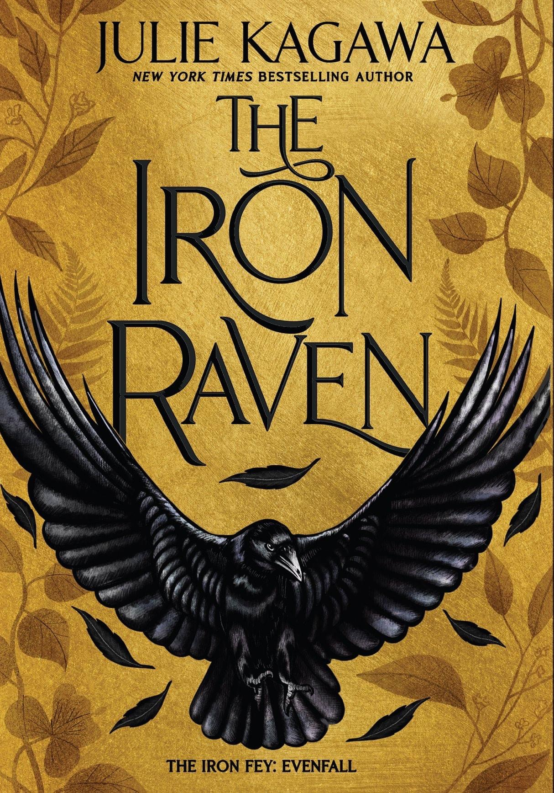 |
Robin Goodfellow. Puck. Prankster, joker, raven, fool… King Oberon's right-hand jester from A Midsummer Night's Dream.
The legends are many, but the truth will now be known, as Puck finally tells his own story and faces a threat from a time before Faery began.
A threat that brings him face-to-face with a new enemy…himself.
With the Iron Queen Meghan Chase and her prince consort, Puck's longtime rival Ash, and allies old and new by his side, Puck begins a fantastical and dangerous adventure not to be missed or forgotten.
Evenfall is coming, and with it a reckoning that even their combined powers and wits may not vanquish, as a shadow falls over the lands of Faery and the world slips into chaos. |
| The Iron Sword |
Julie Kagawa |
The Iron Fey: Evenfall #2 |
YA Fantasy |
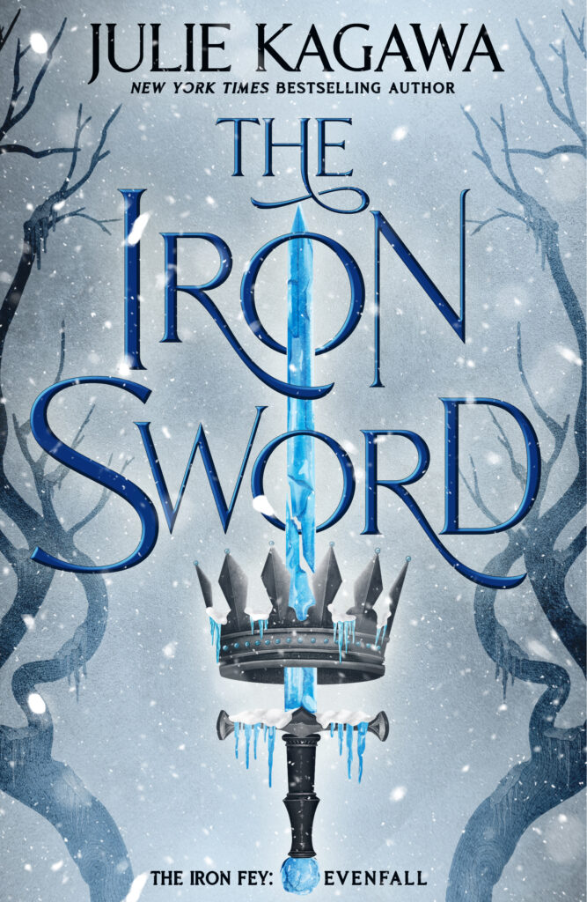 |
Pas op! Spoilers voor vorige boek(en)Banished from the Winter Court for daring to fall in love,
Prince Ash achieved the impossible and journeyed to the End of the World to earn a soul and keep his vow to always stand beside Queen Meghan of the Iron Fey.
Now he faces even more incomprehensible odds. Their son, King Keirran of the Forgotten, is missing.
Something more ancient than the courts of Faery and more evil than anything Ash has faced in a millennium is rising as Evenfall approaches.
And if Ash and his allies cannot stop it, the chaos that has begun to divide the world will shatter it for eternity. |
| The Iron Vow |
Julie Kagawa |
The Iron Fey: Evenfall #3 |
YA Fantasy |
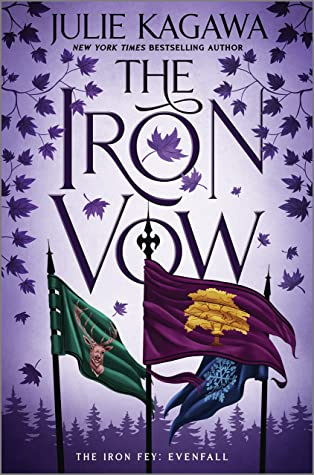 |
Pas op! Spoilers voor vorige boek(en)After leaping through the portal to Evenfall, Meghan and her companions find themselves in a terrifying new world where Nightmares roam and glamour is nearly nonexistent.
As their magic wanes and the creatures of Evenfall rise against them, the race to find the Nightmare King grows ever more desperate.
But what they discover--about Evenfall, about the Nightmare King, about themselves--will shake everything they thought they knew to the core.
The Nightmare King stirs. A world hangs in the balance. And as twilight descends upon all the realms of Faery, Meghan and her allies must make one more impossible choice. |
| Chain of Thorns |
Cassandra Clare |
The Last Hours #3 |
YA Fantasy |
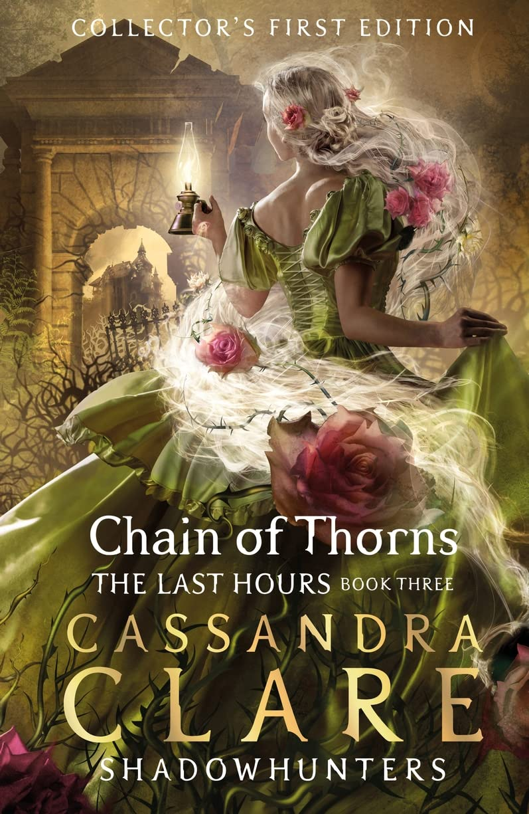 |
Pas op! Spoilers voor vorige boek(en)Cordelia Carstairs has lost everything that matters to her. In only a few short weeks, she has seen her father murdered,
her plans to become parabatai with her best friend, Lucie, destroyed, and her marriage to James Herondale crumble before her eyes.
Even worse, she is now bound to an ancient demon, Lilith, stripping her of her power as a Shadowhunter.
After fleeing to Paris with Matthew Fairchild, Cordelia hopes to forget her sorrows in the city's glittering nightlife.
But reality intrudes when shocking news comes from home: Tatiana Blackthorn has escaped the Adamant Citadel, and London is under new threat by the Prince of Hell, Belial.
Cordelia returns to a London riven by chaos and dissent. The long-kept secret that Belial is James and Lucie's grandfather has been revealed by an unexpected enemy, and the Herondales find themselves under suspicion of dealings with demons.
Cordelia longs to protect James but is torn between a love for James she has long believed hopeless, and the possibility of a new life with Matthew.
Nor can her friends help—ripped apart by their own secrets, they seem destined to face what is coming alone.
For time is short, and Belial's plan is about to crash into the Shadowhunters of London like a deadly wave, one that will separate Cordelia, Lucie, and the Merry Thieves from help of any kind.
Left alone in a shadowy London, they must face Belial's deadly army.
If Cordelia and her friends are going to save their city—and their families—they will have to muster their courage, swallow their pride, and trust one another again.
For if they fail, they may lose everything—even their souls. |
| House of Sky and Breath |
Sarah J. Maas |
Crescent City #2 |
FantasyRomance |
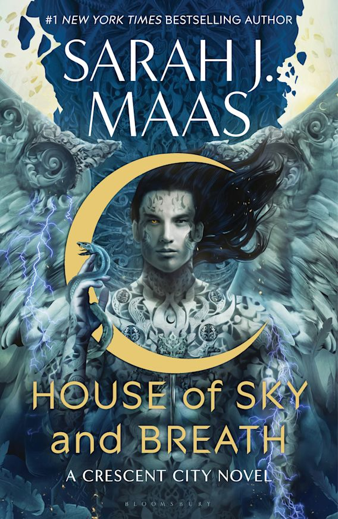 |
Pas op! Spoilers voor vorige boek(en)Bryce Quinlan and Hunt Athalar are trying to get back to normal,they may have saved Crescent City,
but with so much upheaval in their lives lately, they mostly want a chance to relax. Slow down. Figure out what the future holds.
The Asteri have kept their word so far, leaving Bryce and Hunt alone. But with the rebels chipping away at the Asteri's power, the threat the rulers pose is growing.
As Bryce, Hunt, and their friends get pulled into the rebels' plans, the choice becomes clear: stay silent while others are oppressed, or fight for what's right.
And they've never been very good at staying silent. |
| Fire with Fire |
Destiny Soria |
- |
YA Fantasy |
 |
Dani and Eden Rivera were both born to kill dragons, but the sisters couldn't be more different.
For Dani, dragon slaying takes a back seat to normal high school life, while Eden prioritizes training above everything else.
Yet they both agree on one thing: it's kill or be killed where dragons are concerned.
Until Dani comes face-to-face with one and forges a rare and magical bond with him. As she gets to know Nox, she realizes that everything she thought she knew about dragons is wrong.
With Dani lost to the dragons, Eden turns to the mysterious and alluring sorcerers to help save her sister. Now on opposite sides of the conflict, the sisters will do whatever it takes to save the other.
But the two are playing with magic that is more dangerous than they know, and there is another, more powerful enemy waiting for them both in the shadows.
|
| Only a Monster |
Vanessa Len |
Monsters #1 |
YA Fantasy |
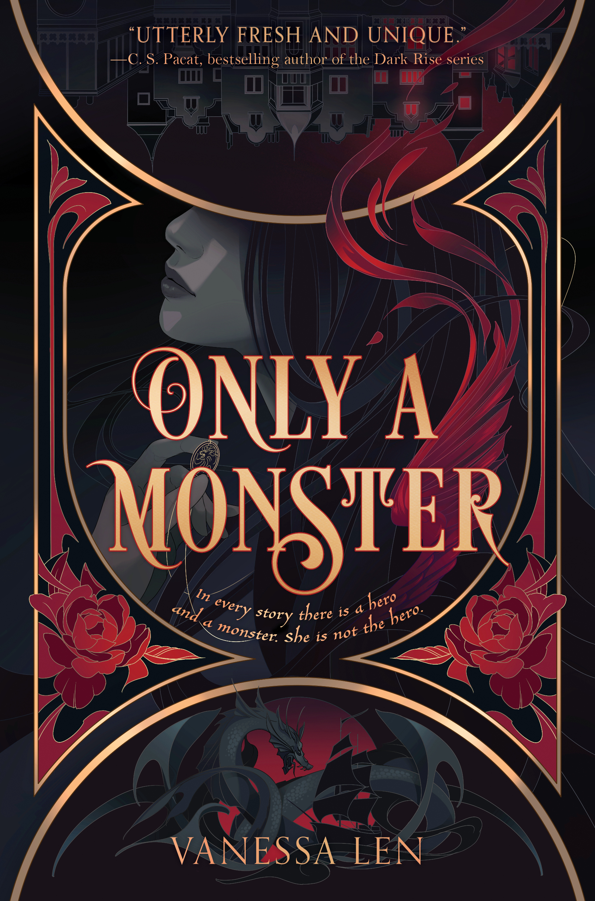 |
It should have been the perfect summer. Sent to stay with her late mother's eccentric family in London, sixteen-year-old Joan is determined to enjoy herself.
She loves her nerdy job at the historic Holland House, and when her super cute co-worker Nick asks her on a date, it feels like everything is falling into place.
But she soon learns the truth. Her family aren't just eccentric: they're monsters, with terrifying, hidden powers.
And Nick isn't just a cute boy: he's a legendary monster slayer, who will do anything to bring them down.
As she battles Nick, Joan is forced to work with the beautiful and ruthless Aaron Oliver, heir to a monster family that hates her own.
She'll have to embrace her own monstrousness if she is to save herself, and her family. Because in this story...
...she is not the hero. |
| Never a Hero |
Vanessa Len |
Monsters #2 |
YA Fantasy |
 |
Pas op! Spoilers voor vorige boek(en)This sequel to the contemporary fantasy Only a Monster will take Joan deeper into the monster world, where treacherous secrets and even more danger await.
Despite all of the odds, Joan achieved the impossible. She reset the timeline, saved her family, and destroyed the hero, Nick.
But her success has come at a terrible cost. She alone remembers what happened. Now, Aaron, her hard-won friend, and maybe more, is an enemy, trying to kill her.
And Nick, the boy she loved, is a stranger who doesn't even know her name. Only Joan remembers that there is a ruthless and dangerous enemy still out there.
When a deadly attack forces Joan back into the monster world as a fugitive, she finds herself on the run with Nick, as Aaron closes in.
As the danger rises, and Nick gets perilously closer to discovering the truth of what Joan did to him, Joan discovers a secret of her own. One that threatens everyone she loves.
Torn between love and family and monstrous choices, Joan must find a way to re-gather her old allies to face down the deadliest of enemies, and to save the timeline itself. |
| A Restless Truth |
Freya Marske |
The Last Binding #2 |
Historical Fantasy |
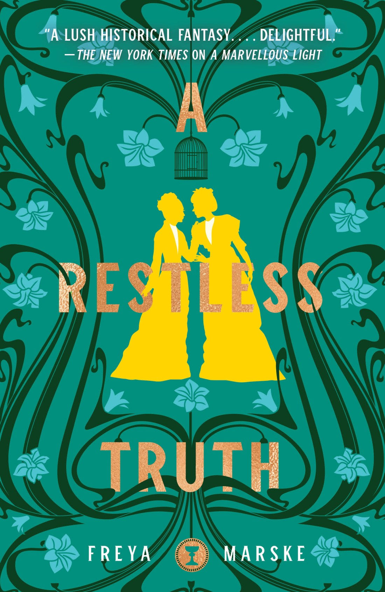 |
Pas op! Spoilers voor vorige boek(en)Maud Blyth has always longed for adventure. She expected plenty of it when she volunteered to serve as an old lady's companion on an ocean liner,
in order to help her beloved older brother unravel a magical conspiracy that began generations ago.
What she didn't expect was for the old lady in question to turn up dead on the first day of the voyage.
Now she has to deal with a dead body, a disrespectful parrot, and the lovely, dangerously outrageous Violet Debenham, who's also returning home to England.
Violet is everything that Maud has been trained to distrust yet can't help but desire: a magician, an actress, and a magnet for scandal.
Surrounded by the open sea and a ship full of suspects, Maud and Violet must first drop the masks that they've both learned to wear before they can unmask a murderer
and somehow get their hands on a magical object worth killing for—without ending up dead in the water themselves. |
| Becoming |
Michelle Obama |
- |
Non-Fiction |
 |
In a life filled with meaning and accomplishment, Michelle Obama has emerged as one of the most iconic and compelling women of our era.
As First Lady of the United States of America—the first African American to serve in that role—she helped create the most welcoming and inclusive White House in history,
while also establishing herself as a powerful advocate for women and girls in the U.S. and around the world, dramatically changing the ways that families pursue healthier and more active lives,
and standing with her husband as he led America through some of its most harrowing moments.
Along the way, she showed us a few dance moves, crushed Carpool Karaoke, and raised two down-to-earth daughters under an unforgiving media glare.
In her memoir, a work of deep reflection and mesmerizing storytelling, Michelle Obama invites readers into her world,
chronicling the experiences that have shaped her—from her childhood on the South Side of Chicago to her years as an executive balancing the demands of motherhood and work,
to her time spent at the world's most famous address. With unerring honesty and lively wit, she describes her triumphs and her disappointments,
both public and private, telling her full story as she has lived it—in her own words and on her own terms. Warm, wise, and revelatory,
Becoming is the deeply personal reckoning of a woman of soul and substance who has steadily defied expectations—and whose story inspires us to do the same. |
| People we Meet on Vacation |
Emily Henry |
- |
Adult Romance |
 |
Poppy and Alex. Alex and Poppy. They have nothing in common. She's a wild child; he wears khakis.
She has insatiable wanderlust; he prefers to stay home with a book. And somehow, ever since a fateful car share home from college many years ago, they are the very best of friends.
For most of the year they live far apart—she's in New York City, and he's in their small hometown—but every summer, for a decade, they have taken one glorious week of vacation together.
Until two years ago, when they ruined everything. They haven't spoken since.
Poppy has everything she should want, but she's stuck in a rut. When someone asks when she was last truly happy, she knows, without a doubt, it was on that ill-fated, final trip with Alex.
And so, she decides to convince her best friend to take one more vacation together—lay everything on the table, make it all right. Miraculously, he agrees.
Now she has a week to fix everything. If only she can get around the one big truth that has always stood quietly in the middle of their seemingly perfect relationship.
What could possibly go wrong? |
| Court of Lions |
Somaiya Daud |
Mirage #2 |
YA Fantasy |
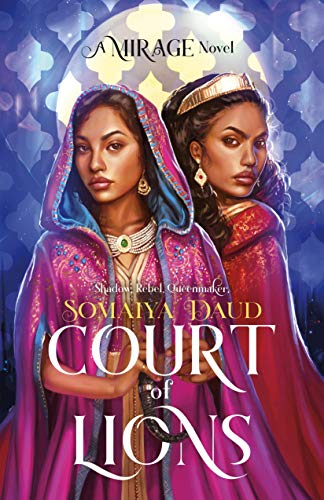 |
Pas op! Spoilers voor vorige boek(en)After being swept up into the brutal Vathek court, Amani, the ordinary girl forced to serve as the half-Vathek princess's body double, has been forced into complete isolation.
The cruel but complex princess, Maram, with whom Amani had cultivated a tenuous friendship, discovered Amani's connection to the rebellion and has forced her into silence,
and if Amani crosses Maram once more, her identity - and her betrayal - will be revealed to everyone in the court.
Amani is desperate to continue helping the rebellion, to fight for her people's freedom.
But she must make a devastating decision: will she step aside, and watch her people suffer, or continue to aid them, and put herself and her family in mortal danger?
And whatever she chooses, can she bear to remain separated, forever, from Maram's fiancé, Idris? |
| Emma |
Jane Austen |
- |
Classic |
 |
Emma Woodhouse is one of Austen's most captivating and vivid characters.
Beautiful, spoilt, vain and irrepressibly witty, Emma organizes the lives of the inhabitants of her sleepy little village and plays matchmaker with devastating effect. |
| Only on the Weekends |
Dean Atta |
- |
YA Poetry |
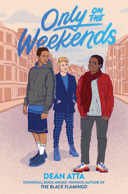 |
Fifteen-year-old Mack is a hopeless romantic--likely a hazard of growing up on film sets thanks to his father's job.
Mack has had a crush on Karim for as long as he can remember and he can't believe it when gorgeous, popular Karim seems into him too.
But when Mack's father takes on a new directing project in Scotland, Mack has to move away, and soon discovers how painful long-distance relationships can be.
It's awful to be so far away from Karim, and it's made worse by the fact that Karim can be so hard to read.
Then Mack meets actor Finlay on set, and the world turns upside down again. Fin seems fearless--and his confidence could just be infectious. |
| Afterlove |
Tanya Byrne |
- |
YA Romance |
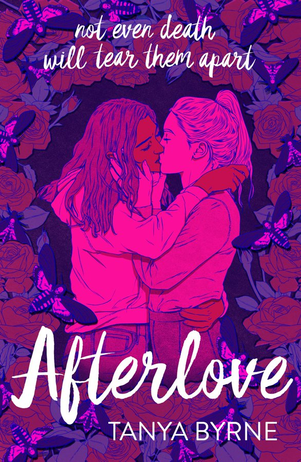 |
Ash Persaud is about to become a reaper in the afterlife, but she is determined to see her first love Poppy Morgan again, the only thing that separates them is death.
Car headlights.The last thing Ash hears is the snap of breaking glass as the windscreen hits her and breaks into a million pieces like stars.
But she made it, she's still here. Or is she?
This New Year's Eve, Ash is gets an RSVP from the afterlife she can't decline: to join a clan of fierce girl reapers who take the souls of the city's dead to await their fate.
But Ash can't forget her first love, Poppy, and she will do anything to see her again... even if it means they only get a few more days together. Dead or alive... |
| Skyward |
Brandon Sanderson |
Skyward #1 |
YA Science Fiction |
 |
Defeated, crushed, and driven almost to extinction, the remnants of the human race are trapped on a planet that is constantly attacked by mysterious alien starfighters.
Spensa, a teenage girl living among them, longs to be a pilot. When she discovers the wreckage of an ancient ship, she realizes this dream might be possible—assuming she can repair the ship, navigate flight school, and (perhaps most importantly) persuade the strange machine to help her.
Because this ship, uniquely, appears to have a soul. |
| Klara and the Sun |
Kazuo Ishiguro |
- |
Science Fiction |
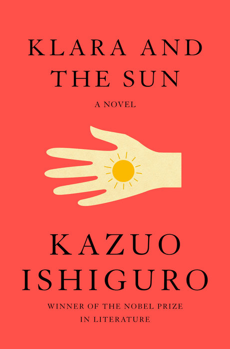 |
From her place in the store, Klara, an Artificial Friend with outstanding observational qualities, watches carefully the behavior of those who come in to browse, and of those who pass on the street outside.
She remains hopeful that a customer will soon choose her, but when the possibility emerges that her circumstances may change forever, Klara is warned not to invest too much in the promises of humans. |
| Fresh Water for Flowers |
Valerie Perrin |
- |
Fiction Romance |
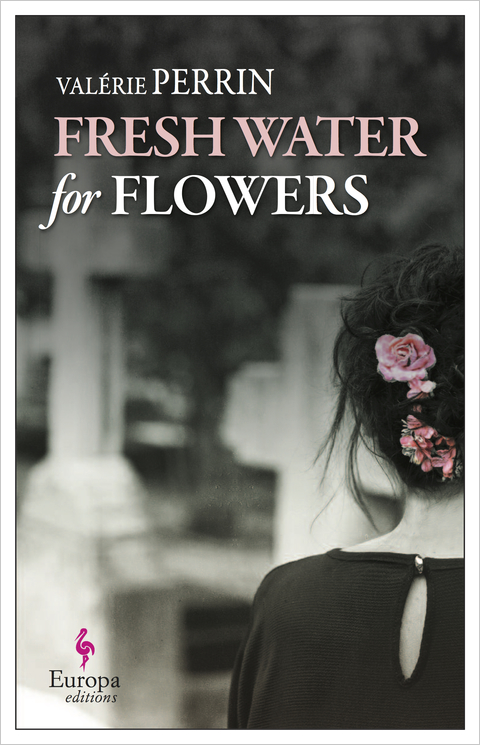 |
Violette Toussaint is the caretaker at a cemetery in a small town in Bourgogne.
Random visitors, regulars, and, most notably, her colleagues—three gravediggers, three groundskeepers, and a priest—visit her as often as possible to warm themselves in her lodge, where laughter, companionship, and occasional tears mix with the coffee that she offers them.
Her daily life is lived to the rhythms of their hilarious and touching confidences.
Violette's routine is disrupted one day by the arrival of a man—Julien Sole, local police chief—who insists on depositing the ashes of his recently departed mother on the gravesite of a complete stranger.
It soon becomes clear that the grave Julien is looking for belongs to his mother's one-time lover, and that his mother's story of clandestine love is intertwined with Violette's own secret past. |
| Convenience Store Woman |
Sayaka Murata |
- |
Japanese Litarature |
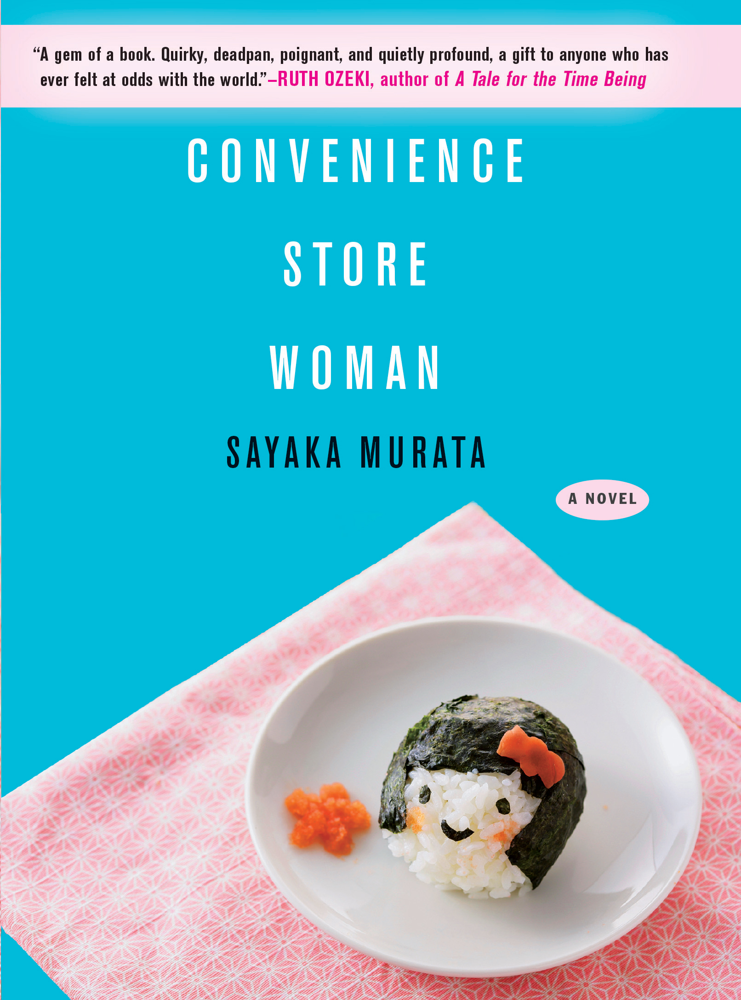 |
Keiko has never fit in, neither in her family, nor in school, but when at the age of eighteen she begins working at the Hiiromachi branch of “Smile Mart,” she finds peace and purpose in her life.
In the store, unlike anywhere else, she understands the rules of social interaction―many are laid out line by line in the store's manual―and she does her best to copy the dress, mannerisms, and speech of her colleagues, playing the part of a “normal” person excellently, more or less.
Keiko is very happy, but the people close to her, from her family to her coworkers, increasingly pressure her to find a husband, and to start a proper career, prompting her to take desperate action… |
| Mrs. Dalloway |
Virginia Woolf |
- |
Classic |
 |
Heralded as Virginia Woolf's greatest novel, this is a vivid portrait of a single day in a woman's life.
When we meet her, Mrs. Clarissa Dalloway is preoccupied with the last-minute details of party preparation while in her mind she is something much more than a perfect society hostess.
As she readies her house, she is flooded with remembrances of faraway times. And, met with the realities of the present, Clarissa reexamines the choices that brought her there, hesitantly looking ahead to the unfamiliar work of growing old. |
| The Bell Jar |
Sylvia Plath |
- |
Classic |
 |
The Bell Jar chronicles the crack-up of Esther Greenwood: brilliant, beautiful, enormously talented, and successful, but slowly going under—maybe for the last time.
Sylvia Plath masterfully draws the reader into Esther's breakdown with such intensity that Esther's insanity becomes completely real and even rational, as probable and accessible an experience as going to the movies.
Such deep penetration into the dark and harrowing corners of the psyche is an extraordinary accomplishment and has made The Bell Jar a haunting American classic. |
| The Color Purple |
Alice Walker |
- |
Classic |
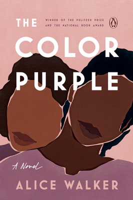 |
A powerful cultural touchstone of modern American literature, The Color Purple depicts the lives of African American women in early twentieth-century rural Georgia.
Separated as girls, sisters Celie and Nettie sustain their loyalty to and hope in each other across time, distance and silence.
Through a series of letters spanning twenty years, first from Celie to God, then the sisters to each other despite the unknown, the novel draws readers into its rich and memorable portrayals of Celie, Nettie, Shug Avery and Sofia and their experience.
The Color Purple broke the silence around domestic and sexual abuse, narrating the lives of women through their pain and struggle, companionship and growth, resilience and bravery.
Deeply compassionate and beautifully imagined, Alice Walker's epic carries readers on a spirit-affirming journey towards redemption and love. |
| One True Loves |
Taylor Jenkins Read |
- |
Romance |
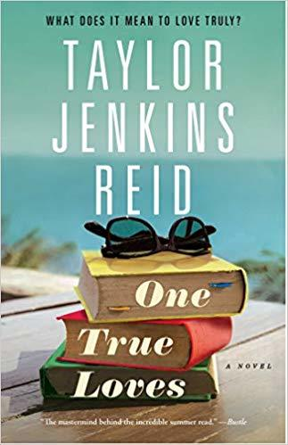 |
In her twenties, Emma Blair marries her high school sweetheart, Jesse. They build a life for themselves, far away from the expectations of their parents and the people of their hometown in Massachusetts.
They travel the world together, living life to the fullest and seizing every opportunity for adventure.
On their first wedding anniversary, Jesse is on a helicopter over the Pacific when it goes missing. Just like that, Jesse is gone forever.
Emma quits her job and moves home in an effort to put her life back together. Years later, now in her thirties, Emma runs into an old friend, Sam, and finds herself falling in love again.
When Emma and Sam get engaged, it feels like Emma's second chance at happiness.
That is, until Jesse is found. He's alive, and he's been trying all these years to come home to her. With a husband and a fiancé, Emma has to now figure out who she is and what she wants, while trying to protect the ones she loves.
Who is her one true love? What does it mean to love truly?
Emma knows she has to listen to her heart. She's just not sure what it's saying. |
| Malibu Rising |
Taylor Jenkins Read |
- |
Romance |
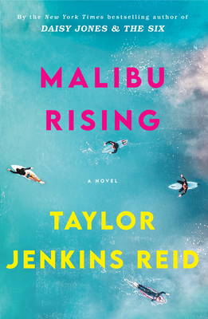 |
Malibu: August, 1983. It's the day of Nina Riva's annual end-of-summer party, and anticipation is at a fever pitch.
Everyone wants to be around the famous Rivas: Nina, the talented surfer and supermodel; brothers Jay and Hud, one a championship surfer, the other a renowned photographer; and their adored baby sister, Kit.
Together, the siblings are a source of fascination in Malibu and the world over—especially as the offspring of the legendary singer, Mick Riva.
The only person not looking forward to the party of the year is Nina herself, who never wanted to be the center of attention, and who has also just been very publicly abandoned by her pro tennis player husband.
Oh, and maybe Hud—because it is long past time to confess something to the brother from whom he's been inseparable since birth.
Jay, on the other hand, is counting the minutes until nightfall, when the girl he can't stop thinking about promised she'll be there.
And Kit has a couple secrets of her own—including a guest she invited without consulting anyone.
By midnight the party will be completely out of control. By morning, the Riva mansion will have gone up in flames.
But before that first spark in the early hours before dawn, the alcohol will flow, the music will play, and the loves and secrets that shaped this family's generations will all come bubbling to the surface. |
| Things We Never Got Over |
Lucy Score |
Knockemout #1 |
Adult Romance |
 |
Bearded, bad-boy barber Knox prefers to live his life the way he takes his coffee: Alone. Unless you count his basset hound, Waylon.
Knox doesn't tolerate drama, even when it comes in the form of a stranded runaway bride.
Naomi wasn't just running away from her wedding. She was riding to the rescue of her estranged twin to Knockemout, Virginia,
a rough-around-the-edges town where disputes are settled the old-fashioned way…with fists and beer. Usually in that order.
Too bad for Naomi her evil twin hasn't changed at all. After helping herself to Naomi's car and cash, Tina leaves her with something unexpected.
The niece Naomi didn't know she had. Now she's stuck in town with no car, no job, no plan, and no home with an 11-year-old going on thirty to take care of.
There's a reason Knox doesn't do complications or high-maintenance women, especially not the romantic ones. But since Naomi's life imploded right in front of him, the least he can do is help her out of her jam.
And just as soon as she stops getting into new trouble he can leave her alone and get back to his peaceful, solitary life.
At least, that's the plan until the trouble turns to real danger. |
| Things We Left Behind |
Lucy Score |
Knockemount #3 |
Adult Romance |
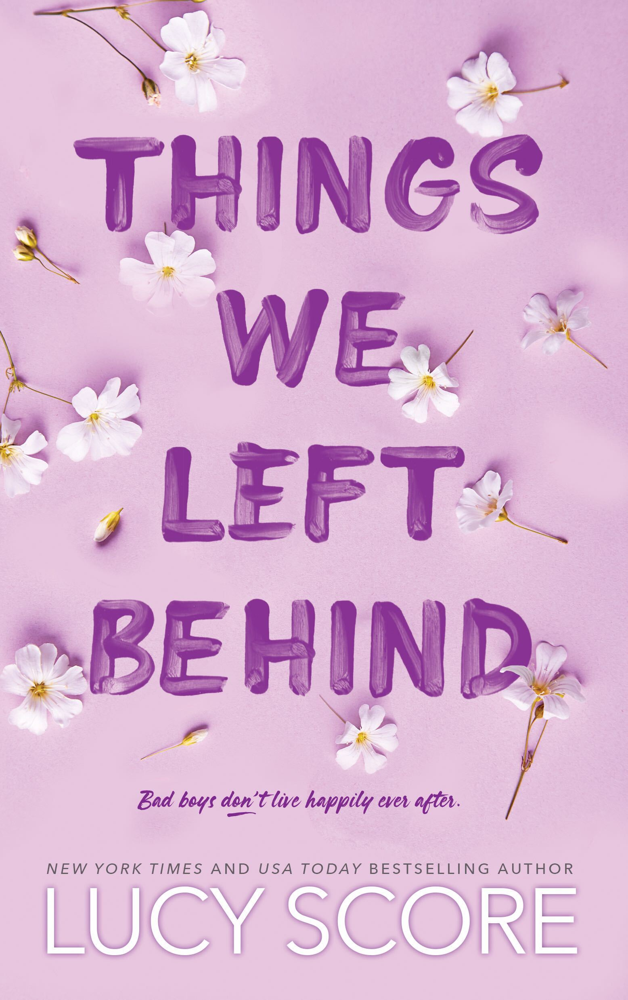 |
Pas op! Spoilers voor vorige boek(en)There was only one woman who could set me free. But I would rather set myself on fire than ask Sloane Walton for anything.
Lucian Rollins is a lean, mean vengeance-seeking mogul. On a quest to erase his father's mark on the family name, he spends every waking minute pulling strings and building an indestructible empire.
The more money and power he amasses, the safer he is from threats.
Except when it comes to the feisty small-town librarian that keeps him up at night…
Sloane Walton is a spitfire determined to carry on her father's quest for justice. She'll do that just as soon as she figures out exactly what the man she hates did to—or for—her family.
Bonded by an old, dark secret from the past and the dislike they now share for each other, Sloane trusts Lucian about as far as she can throw his designer-suited body.
When bickering accidentally turns to foreplay, these two find themselves not quite regretting their steamy one-night stand.
Once those flames are fanned, it seems impossible to put them out again. But with Sloane ready to start a family and Lucian refusing to even consider the idea of marriage and kids, these enemies-to-lovers are stuck at an impasse.
Broken men break women. It's what Lucian believes, what he's witnessed, and he's not going to take that chance with Sloane.
He'd rather live a life of solitude than put her in danger. But he learns the hard way that leaving her means leaving her unprotected from other threats.
It's the second time he's ruthlessly cut her out of his life. There's no way she's going to give him a third chance. He's just going to have to make one for himself. |
| Het Achterhuis |
Anne Frank |
- |
Non-Fiction |
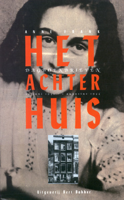 |
Anne Frank hield van 12 juni 1942 tot 1 augustus 1944 een dagboek bij.
Ze schreef haar brieven alleen voor zichzelf, tot ze in de lente van 1944 op de radio de minister van Onderwijs in ballingschap, Bolkestein, hoorde spreken.
Hij zei dat na de oorlog alle getuigenissen van het lijden van het Nederlandse volk onder de Duitse bezetting verzameld en openbaar moesten worden gemaakt.
Als voorbeeld noemde hij onder meer dagboeken. Onder de indruk van deze redevoering besloot Anne Frank na de oorlog een boek te publiceren. Haar dagboek zou daarvoor als basis dienen.
In maart 1945 stierf Anne Frank op vijftienjarige leeftijd in het concentratiekamp Bergen-Belsen.
De enige overlevende van de familie, Otto Frank, zorgde ervoor dat het dagboek van zijn dochter toch gepubliceerd werd. In 1947 verscheen Het Achterhuis. |
| Conversations with Friends |
Sally Rooney |
- |
Fiction |
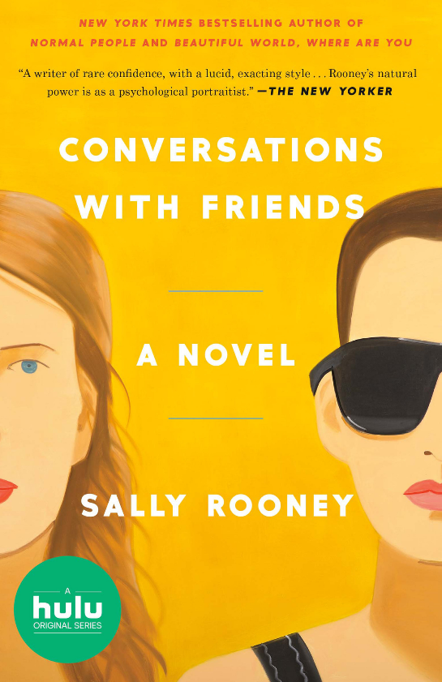 |
Frances is twenty-one years old, cool-headed, and darkly observant.
A college student and aspiring writer, she devotes herself to a life of the mind--and to the beautiful and endlessly self-possessed Bobbi, her best friend and comrade-in-arms.
Lovers at school, the two young women now perform spoken-word poetry together in Dublin, where a journalist named Melissa spots their potential.
Drawn into Melissa's orbit, Frances is reluctantly impressed by the older woman's sophisticated home and tall, handsome husband. Private property, Frances believes, is a cultural evil--and Nick, a bored actor who never quite lived up to his potential,
looks like patriarchy made flesh. But however amusing their flirtation seems at first, it gives way to a strange intimacy neither of them expect.
As Frances tries to keep her life in check, her relationships increasingly resist her control: with Nick, with her difficult and unhappy father, and finally even with Bobbi.
Desperate to reconcile herself to the desires and vulnerabilities of her body, Frances's intellectual certainties begin to yield to something new: a painful and disorienting way of living from moment to moment. |
| Beasts of Prey |
Ayana Gray |
Beasts of Prey #1 |
YA Fantasy |
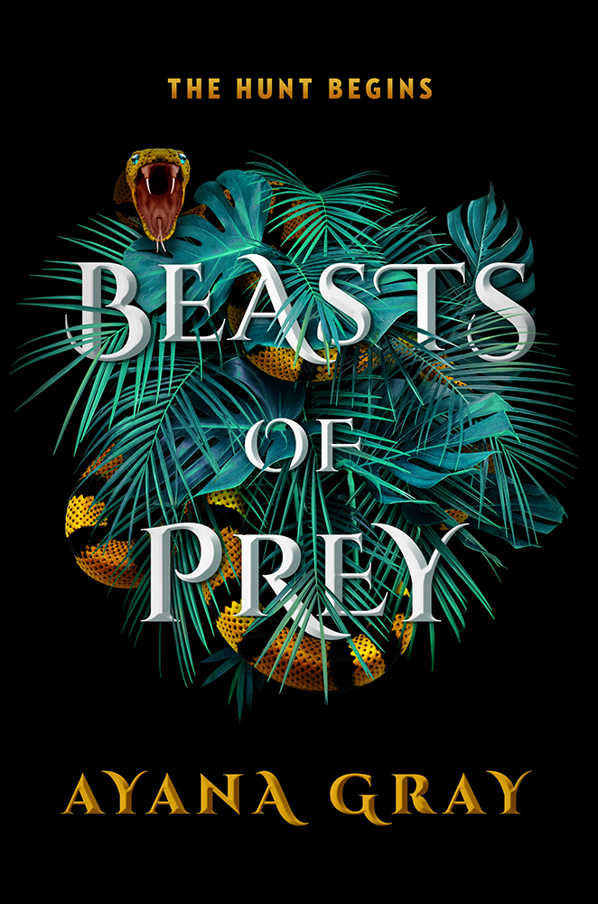 |
Magic doesn't exist in the broken city of Lkossa anymore, especially for girls like sixteen-year-old Koffi.
Indentured to the notorious Night Zoo, she cares for its fearsome and magical creatures to pay off her family's debts and secure their eventual freedom.
But the night her loved ones' own safety is threatened by the Zoo's cruel master, Koffi unleashes a power she doesn't fully understand--and the consequences are dire.
As the second son of a decorated hero, Ekon is all but destined to become a Son of the Six--an elite warrior--and uphold a family legacy.
But on the night of his final rite of passage, a fire upends his plans. In its midst, Ekon not only encounters the Shetani--a vicious monster that has plagued the city and his nightmares for nearly a century--but a curious girl who seems to have the power to ward off the beast.
Koffi's power ultimately saves Ekon's life, but his choice to let her flee dooms his hopes of becoming a warrior.
Desperate to redeem himself, Ekon vows to hunt the Shetani down and end its reign of terror, but he can't do it alone.
Meanwhile, Koffi believes finding the Shetani and selling it for a profit could be the key to solving her own problems.
Koffi and Ekon--each keeping their true motives secret from the other--form a tentative alliance and enter into the unknowns of the Greater Jungle, a world steeped in wild magic and untold dangers.
The hunt begins. But it quickly becomes unclear whether they are the hunters or the hunted. |
| The Gilded Ones |
Namina Forna |
Deathless #1 |
YA Fantasy |
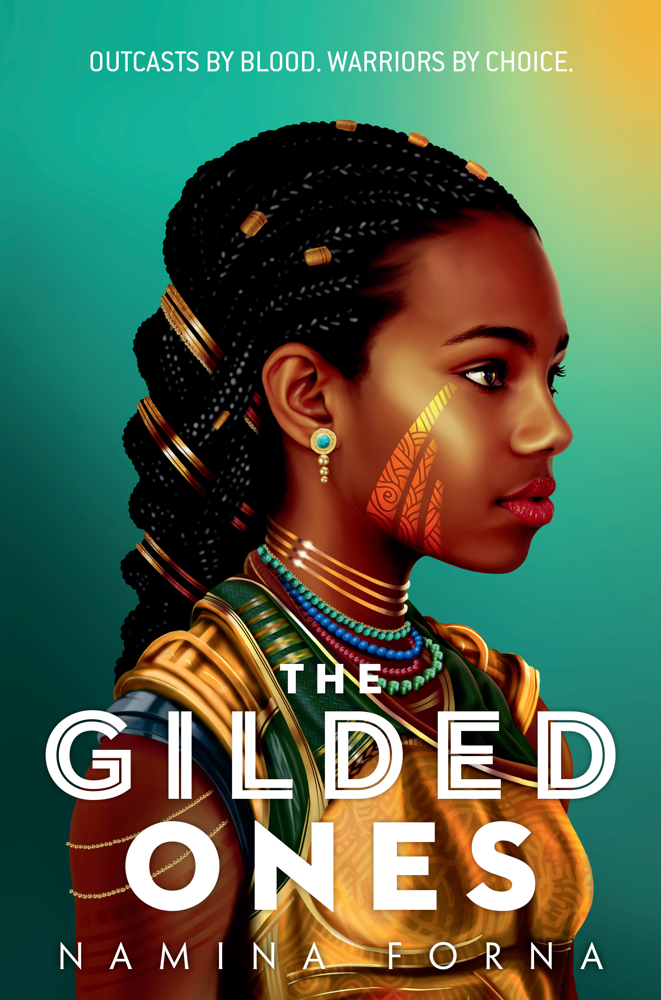 |
Sixteen-year-old Deka lives in fear and anticipation of the blood ceremony that will determine whether she will become a member of her village.
Already different from everyone else because of her unnatural intuition, Deka prays for red blood so she can finally feel like she belongs.
But on the day of the ceremony, her blood runs gold, the color of impurity--and Deka knows she will face a consequence worse than death.
Then a mysterious woman comes to her with a choice: stay in the village and submit to her fate, or leave to fight for the emperor in an army of girls just like her.
They are called alaki--near-immortals with rare gifts. And they are the only ones who can stop the empire's greatest threat.
Knowing the dangers that lie ahead yet yearning for acceptance, Deka decides to leave the only life she's ever known.
But as she journeys to the capital to train for the biggest battle of her life, she will discover that the great walled city holds many surprises.
Nothing and no one are quite what they seem to be--not even Deka herself. |
| Dickinson |
Emily Dickinson |
- |
Poetry |
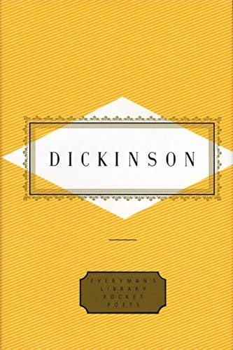 |
Collection of Poetry by Emily Dickinson |
| Language Myths |
Laurie Bauer & Peter Trudgill |
- |
Non-Fiction |
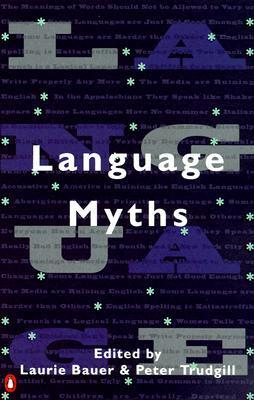 |
The media are ruining English"; "Some languages are harder than others"; "Children can't speak or write properly anymore."
Such pieces of "cultural wisdom" are often expressed in newspapers and on radio and television. Rarely is there a response from experts in the fields of language and language development.
In this book Laurie Bauer and Peter Trudgill have invited nineteen respected linguists from all over the world to address these "language myths"--showing that they vary from the misconceived to the downright wrong.
With essays ranging from "Women Talk Too Much" and "In the Appalachians They Speak Like Shakespeare" to "Italian Is Beautiful, German Is Ugly" and "They Speak Really Bad English Down South and in New York City,"
Language Myths is a collection that is wide-ranging, entertaining, and authoritative. |